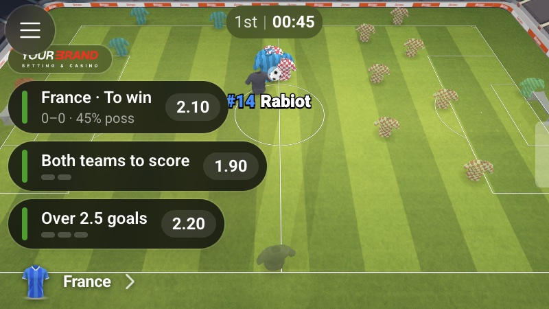
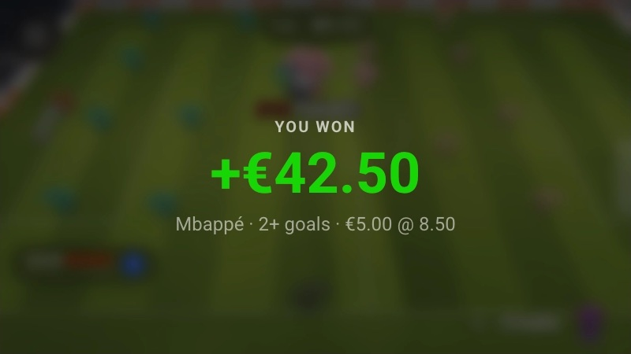
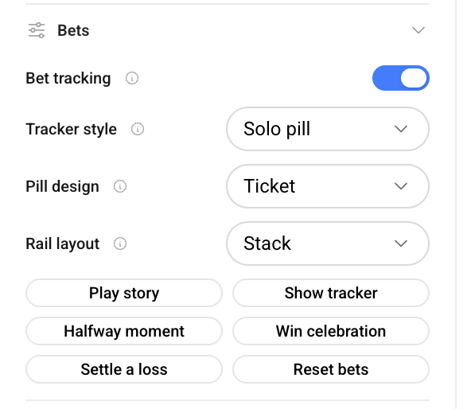

One event, many bets
A goal can advance a player's "2+ goals" and their team's "to win" at the same time. I identified this fan-out first, and it shaped the architecture: a priority system decides what surfaces, where, and in what order.
A personalised layer that reshapes a live 2.5D match around the viewer's own bets: which selections are live, how close each one is to landing, and a clear moment when one settles. I owned the design and built it in the product's codebase.
Screens are from an early prototype with placeholder branding. Some details are left out because this is internal work.

The live match tracker renders a match as an animated scene. It showed the match. Bookmakers embedding it wanted it to show the match through the lens of the viewer's bets, tied to their betslips and carrying their branding.
The starting point was a page of rough meeting notes, mostly open questions: how do we show a bet in progress on the pitch? What happens when a player is one goal away from a threshold? What if one event affects several bets at once?
A goal can advance a player's "2+ goals" and their team's "to win" at the same time. I identified this fan-out first, and it shaped the architecture: a priority system decides what surfaces, where, and in what order.
Bet context lives on every layer: a toast when something changes, a strip of chips per active bet, a detail ticket, and highlights inside the 3D scene itself.
Progress reads at a glance ("halfway there", progress rings), being ahead is its own state before a bet settles, and a real win gets a distinct celebration.
I designed the components in Figma, then built them in the team's design-system code with AI assistance, checking every change in the running product. The first HUD read too loud over the moving scene, so I explored three directions and iterated live: hairline separators failed over motion, so the tray became rounded chips with progress rings, and the detail card became a ticket with a segmented meter.
Because the sport-specific parts live in a shared pack, the same module now runs on basketball and two soccer products without a fork. A feature built for one sport became a capability for the whole family.



Building in the product codebase meant iterations were done against real motion, real occlusion by the 3D scene and real timing, not mockups. Most of the decisions on this page came from watching the first version fail in the browser.
I'm here to help you create something exceptional — together.